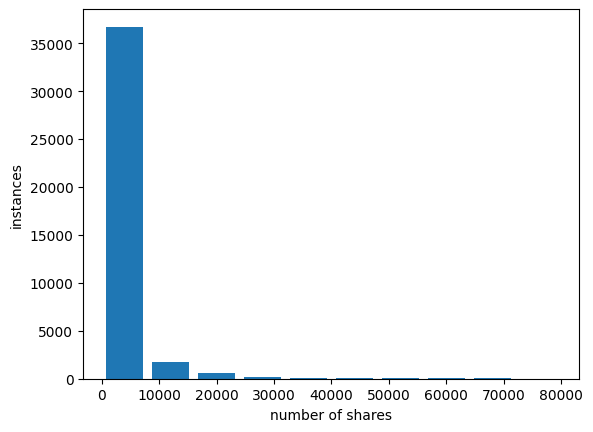
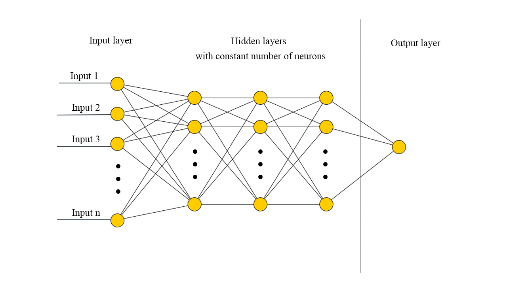
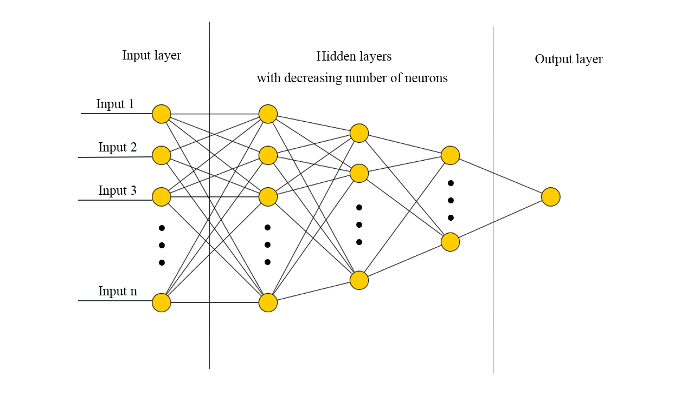

Python · Machine Learning · Cross-Validation
Social Media
Share Predictor
A machine-learning tool that predicts how many shares an article will get, built for a company's communications team. The pipeline runs from exploratory data analysis through outlier handling and feature engineering, then pits Linear Regression, Random Forest, and a configurable artificial neural network against each other under 10-fold cross-validation.
Three models, one bake-off
Take it home
The full project — notebook, Conda environment file, and dataset — is packaged for download. A curated walkthrough of the pipeline follows below.
From raw data to a tuned model
The brief: help a company's social media department predict the number of shares an article will get from its content and publication time. The dataset has 39,644 articles across 58 features. Each step below shows the key code; expand a section to read it.
1 — Exploratory data analysis
We start by inspecting the columns, correlations, and the shape of the data, then look closely at the target variable — shares. Around 90% of articles have fewer than 10K shares, leaving a heavy right tail: only 818 of ~40,000 articles exceed 20K shares.
sms_df = pd.read_csv("social_media_shares.csv")
sms_df.shape # (39644, 59)
sms_df.shares.describe() # mean ≈ 3395, max = 843300
sms_df.corr().shares.sort_values() # what drives shares, up and down
# Distribution of the target
plt.hist(sms_df.shares, range=(-100, 80000), rwidth=0.8)
plt.xlabel("number of shares"); plt.ylabel("instances")

Distribution of shares — dominated by low-share articles with a long, sparse tail of viral outliers.
Self-referencing shares, keywords, images, and links show the strongest positive correlation with shares, while negative polarity and entertainment/technology topics correlate slightly negatively.
2 — Outlier treatment
Categorical (binary) variables can't have outliers, so we identify and set them aside first. The remaining variables are treated by distribution shape: near-Gaussian variables (skew between −0.2 and 0.2) have extreme values beyond the 0.5%/99.5% quantiles replaced with the median; long-tailed variables are trimmed manually; and a handful of heavy-tailed variables are log-transformed.
# Identify binary / categorical columns (only take values {0, 1})
categ = [i for i in sms_df.columns if set(sms_df[i].values) == {0, 1}]
# Bell-shaped variables: clip extremes to the median
gauss = [i for i in cols[:-1] if i not in categ and -0.2 <= sms_df[i].skew() <= 0.2]
for i in gauss:
Q1, Q2, Q3 = sms_df[i].quantile([0.005, 0.5, 0.995])
sms_df[i] = np.where((sms_df[i] >= Q3) | (sms_df[i] <= Q1), Q2, sms_df[i])
# Heavy-tailed variables: log-transform to tame the tail
for i in ["kw_min_min", "kw_max_max", "kw_min_avg", "LDA_00", "LDA_01",
"LDA_02", "LDA_03", "LDA_04", "min_positive_polarity",
"max_positive_polarity", "title_subjectivity",
"abs_title_subjectivity", "abs_title_sentiment_polarity"]:
sms_df[i] = sms_df[i].map(lambda x: np.log(x) if x > 0 else 0)
# Long-tailed variables: trim manually by inspecting each distribution
sms_df = sms_df[sms_df.tokens_content < 2000]
sms_df = sms_df[(sms_df.token_length > 3) & (sms_df.token_length < 6)]
sms_df = sms_df[sms_df.hrefs < 40]
# … (per-variable thresholds for the remaining features)
# Focus the model on the predictable range of the target
sms_v2 = sms_df[sms_df.shares < 2000]
The model is scoped to articles with up to 2,000 shares — the dense, learnable part of the distribution — since the rare viral outliers are too sparse to model reliably with this dataset.
3 — Scaling & train / validation / test split
With no categorical encoding needed, the independent variables are min-max scaled. The target is left unscaled so that errors stay directly interpretable in "shares". The data is split into training, validation, and test sets.
from sklearn.model_selection import train_test_split from sklearn.preprocessing import MinMaxScaler X = sms_v2.iloc[:, :-1].values y = sms_v2.iloc[:, -1].values X_train, X_test, y_train, y_test = train_test_split(X, y, test_size=0.25, random_state=7) scaler = MinMaxScaler() X_train = scaler.fit_transform(X_train) X_test = scaler.transform(X_test) # Carve a validation set out of the training set X_train, X_val, y_train, y_val = train_test_split(X_train, y_train, test_size=0.2, random_state=1)
4 — Baseline: Multivariable Linear Regression
A linear regression sets the baseline. We score every model on Mean Absolute Error (MAE) — easy to interpret since the target is unscaled — alongside MSE and R².
from sklearn.linear_model import LinearRegression from sklearn.metrics import mean_squared_error, mean_absolute_error, r2_score mult_reg = LinearRegression().fit(X_train, y_train) y_pred_mr = mult_reg.predict(X_val) mae_mr = mean_absolute_error(y_val, y_pred_mr) mse_mr = mean_squared_error(y_val, y_pred_mr) r2_mr = r2_score(y_val, y_pred_mr)
5 — Random Forest + GridSearchCV
After a default-parameter baseline, hyperparameters are tuned with a 10-fold grid search over the number of trees, depth, and feature sampling.
from sklearn.ensemble import RandomForestRegressor
from sklearn.model_selection import GridSearchCV
param_grid = {'n_estimators': [100, 250, 500],
'max_depth': [3, 5, 7],
'max_features': ['auto', 'sqrt', 'log2']}
grid_search = GridSearchCV(RandomForestRegressor(), param_grid,
cv=10, scoring="neg_mean_absolute_error")
grid_search.fit(X_train, y_train)
grid_search.best_params_ # n_estimators=250, max_depth=7, max_features='auto'
rf_reg = RandomForestRegressor(n_estimators=250, max_depth=7, max_features='auto')
rf_reg.fit(X_train, y_train)
y_pred_rf = rf_reg.predict(X_val)
6 — Configurable Artificial Neural Network
The ANN is built so that the number of hidden layers, the kernel initializer, the activation, dropout, and L1 regularization are all hyperparameters. A flag also switches between a constant and a decreasing number of neurons per hidden layer, since one may outperform the other depending on the problem.

Constant neurons per hidden layer.

Decreasing neurons per hidden layer.
from keras.models import Sequential
from keras.layers import Dense, Input, Dropout
from tensorflow.keras import regularizers
def build_model(input_size=X_train.shape[1], num_hidden_layers=1,
constant_num_neurons=False, initializer='uniform',
activation_func='relu', p_dropout=0, L1=0):
model = Sequential()
model.add(Input((input_size,)))
for i in range(num_hidden_layers):
neurons = (int(input_size / 2) if constant_num_neurons
else int(((num_hidden_layers - i) * input_size) / (2 * num_hidden_layers)))
model.add(Dense(neurons, kernel_initializer=initializer,
activation=activation_func,
kernel_regularizer=regularizers.L1(l1=L1)))
model.add(Dropout(p_dropout))
model.add(Dense(1, kernel_initializer=initializer, activation=activation_func))
model.compile(loss='mean_absolute_error', optimizer='adam')
return model
L1 helps with feature selection by shrinking weights; dropout makes the model more robust. Hyperparameters are searched with a 10-fold randomized search.
from sklearn.model_selection import RandomizedSearchCV
from tensorflow.keras.wrappers.scikit_learn import KerasRegressor
param_grid = {'num_hidden_layers': range(2, 6),
'constant_num_neurons': [True, False],
'activation_func': ['relu'],
'initializer': ['uniform'],
'p_dropout': [0, 0.2, 0.5],
'L1': [0, 1, 10, 100]}
random_search = RandomizedSearchCV(KerasRegressor(build_model, verbose=0),
param_grid, n_iter=72, cv=10,
scoring='neg_mean_absolute_error')
random_search.fit(X_train, y_train, batch_size=32, epochs=100)
7 — Choosing the best model
Side by side on the validation set, the three models are close. Since MAE was the metric used throughout training and cross-validation, the ANN is selected — it has the lowest MAE, and the L1 + dropout regularization make it the most robust on unseen data.
| Metric | Linear Reg. | Random Forest | ANN |
|---|---|---|---|
| MAE | 292.18 | 296.10 | 290.39 |
| MSE | 133,853 | 134,266 | 135,962 |
| R² | 0.127 | 0.125 | 0.114 |
Validation-set comparison. The ANN wins on MAE — the metric the models were trained and tuned against.
8 — Performance on the held-out test set
The chosen ANN is retrained and evaluated on the test set it has never seen.
regressor = ann_reg regressor.compile(optimizer='adam', loss="MeanAbsoluteError") regressor.fit(X_train, y_train, batch_size=32, epochs=100) y_pred = regressor.predict(X_test) mae = mean_absolute_error(y_test, y_pred) mse = mean_squared_error(y_test, y_pred) r2 = r2_score(y_test, y_pred)
9 — Feature selection: 57 → 16 inputs
Finally, three signals — correlation with the target, LASSO coefficients, and Random Forest feature importances, cross-checked with mutual information — are combined to shrink the input set. Performance stays essentially the same while the feature count drops from 57 to 16, making the model faster, cheaper to run, and easier to collect data for.
from sklearn.linear_model import Lasso
from sklearn.feature_selection import mutual_info_regression
# LASSO coefficients (positive-constrained)
lasso = Lasso(alpha=5, positive=True).fit(X_test, y_test)
# Random Forest importances
feature_imp = pd.Series(rf_reg.feature_importances_, index=feature_list).sort_values()
# Mutual information with the target
mutual_info = pd.Series(mutual_info_regression(X_train, y_train), index=bst[:-1])
mutual_info.sort_values(ascending=False)
# Retrain the ANN on the reduced 16-feature set
reg = build_model(input_size=len(attributes_ind), num_hidden_layers=3,
constant_num_neurons=True, activation_func='relu')
reg.compile(optimizer='adam', loss="MeanAbsoluteError")
reg.fit(X_train[:, attributes_ind], y_train, batch_size=32, epochs=100)
| Model | MAE | MSE | R² |
|---|---|---|---|
| Full feature set | 284.08 | 127,395 | 0.135 |
| 16-feature set | 288.18 | 129,654 | 0.120 |
The smaller model trades a sliver of accuracy for a large gain in speed and data-collection cost.
What the model can — and can't — do
The pipeline produces a usable predictor for articles in the 0–2,000 share range, with the 16-feature ANN as the recommended operating point: nearly the same accuracy as the full model, far cheaper to run and to gather data for. The right choice ultimately depends on the communications team's needs — precision versus speed and data cost.
The honest limitation is the low R² (~0.12 across all models): the supplied features don't fully explain the variation in shares. Share counts are driven heavily by virality and timing effects this dataset doesn't capture. A more robust solution would need a wider range of training data and a deeper study of which features actually influence the outcome.